Which transport protocol is connectionless?
- No handshake, independent datagrams.
- Network layer.
- Connection-oriented.
- Network layer helper.
Process-to-process delivery: port numbers and socket addresses, multiplexing, connectionless vs. connection-oriented service, and the two protocols. TCP gets the detail (sequence and acknowledgment numbers, the three-way handshake, termination, windows); UDP gets the “when is it the right choice” scenarios. Sequence/ACK arithmetic and TCP-or-UDP scenarios are the usual questions.
Every original slide is shown unchanged. Yellow marks on a slide point to a numbered note: hover or tap a mark to jump to its note, and hover a note to see its marks. Questions tagged Past exam appeared on a real paper; Prediction questions are likely angles, not confirmed. Pick an answer to each question: a wrong pick tells you why it is wrong, so you can try again.
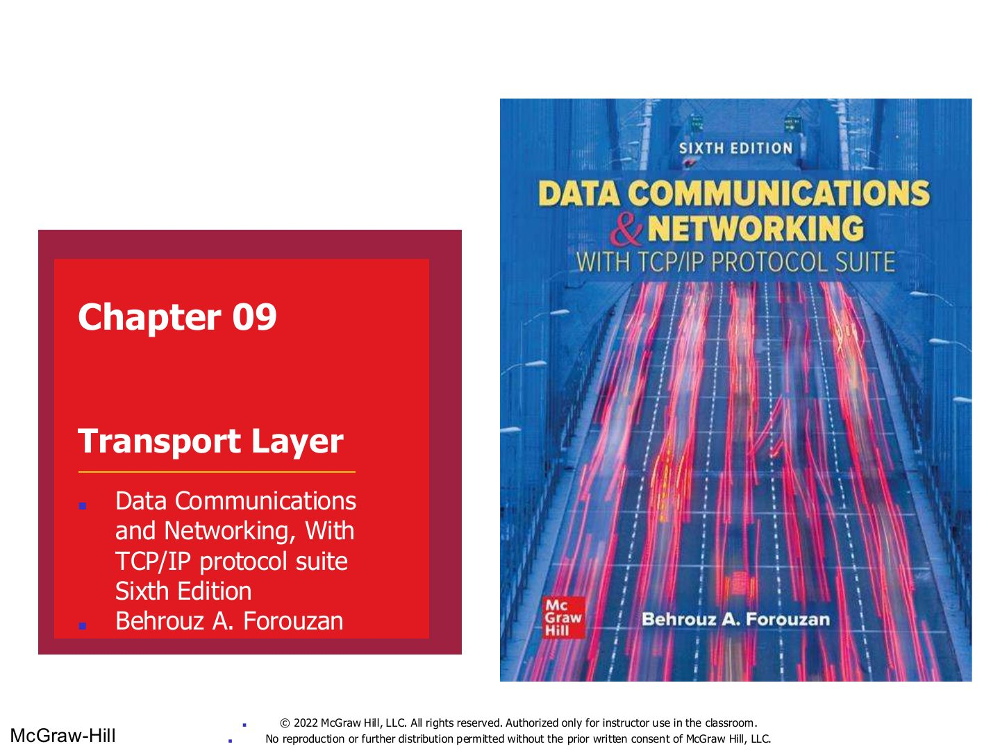
The transport layer gets data from one process (running program) to another. The deck covers its duties; port numbers and socket addresses; multiplexing and demultiplexing; connectionless vs. connection-oriented service; then TCP in detail (header, flags, sequence numbers, the three-way handshake, cumulative ACKs, termination, sliding windows) and UDP (what it skips and which applications it suits). Expect sequence/ACK number calculations and “TCP or UDP, and why?” scenarios.
Which transport protocol is connectionless?
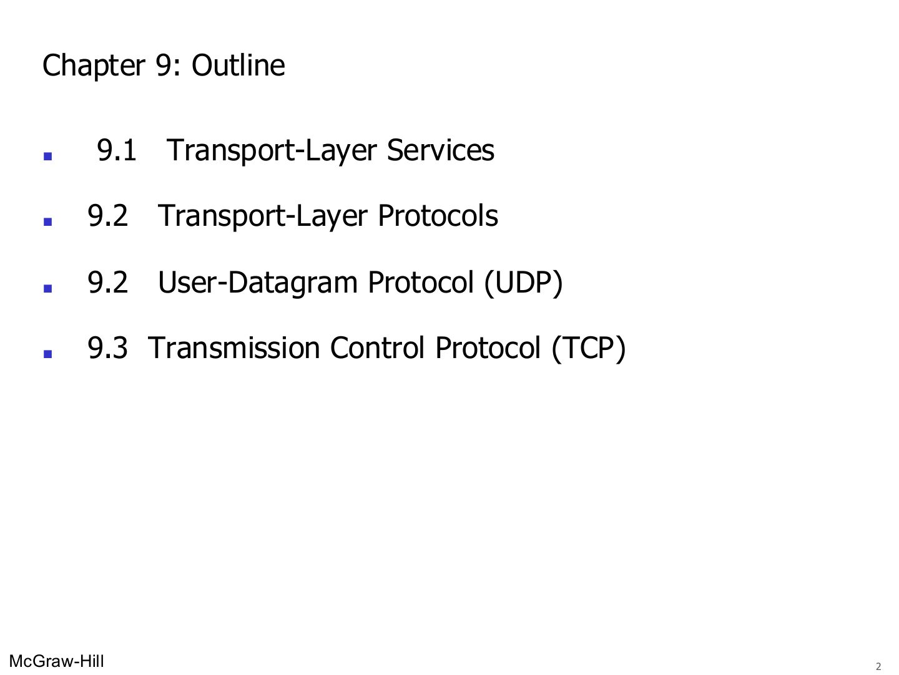
Sections: 9.1 transport-layer services (process-to-process delivery, ports, sockets, multiplexing, congestion, connections), 9.2 transport-layer protocols, UDP, and TCP. The two protocols are opposites in almost every respect, which is why exams love comparing them.
Which section of Chapter 9 covers sequence numbers and the three-way handshake?
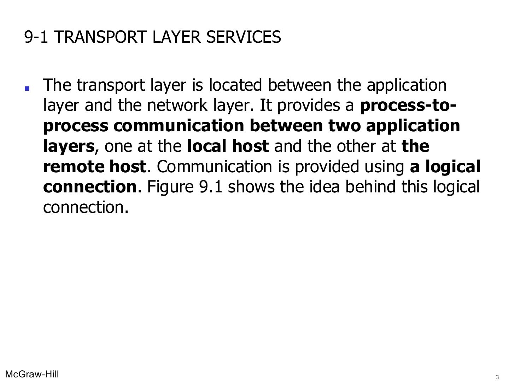
The transport layer sits between the application layer and the network layer. It provides process-to-process communication between two application programs, one on the local host and one on the remote host. It does this over a logical connection: to the two applications, it feels as if they were directly connected, even though the data actually crosses many networks.
Seen again Ch 1 Part 2, slide 38: Transport layer overview
The transport layer provides:
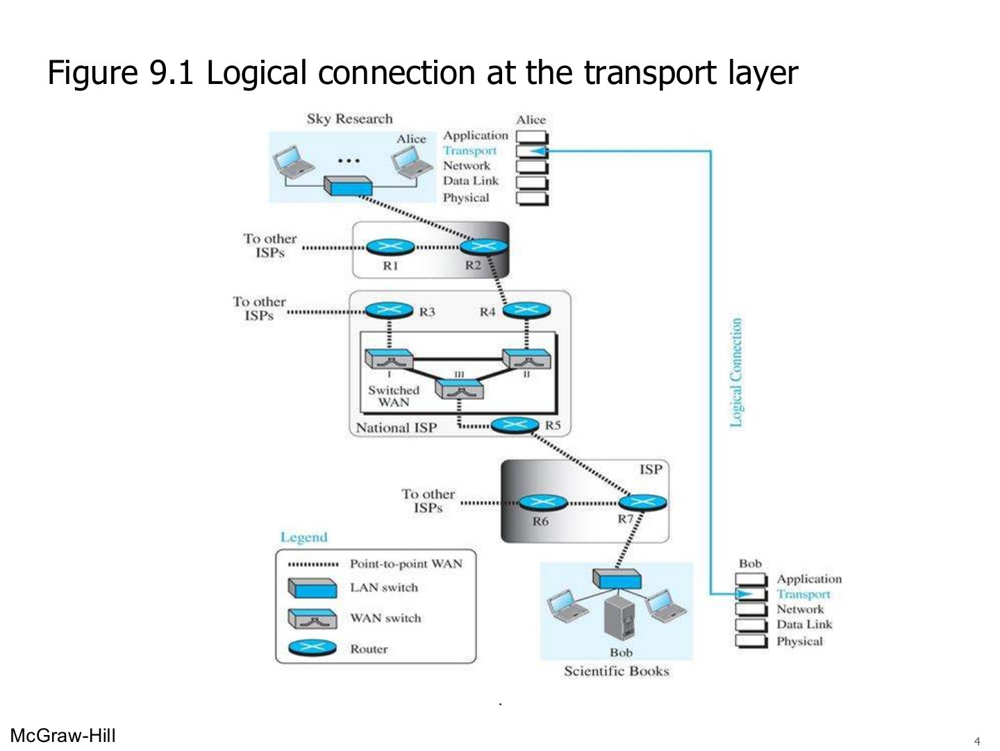
In the figure, Alice’s and Bob’s transport layers talk to each other as if there were a direct link between them. In reality the data crosses several ISPs and routers, but those routers only work up to the network layer and never read the transport header. Only the two end hosts run the transport protocol.
Routers between Alice and Bob read the transport header.
The transport layer has two protocols in this course: UDP and TCP. They sit between the application protocols (SMTP, FTP, Telnet, DNS, SNMP, DHCP…) and IP. Each application protocol is built on one of them (or both, like DNS).
Which two transport protocols does the course cover?
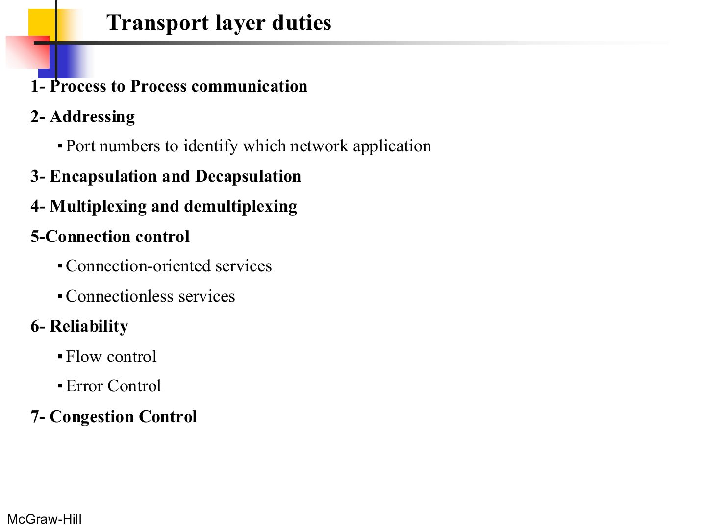
The transport layer’s duties: (1) process-to-process communication; (2) addressing with port numbers, which identify the application; (3) encapsulation and decapsulation of messages; (4) multiplexing and demultiplexing; (5) connection control, offering connection-oriented or connectionless service; (6) reliability, through flow control and error control; (7) congestion control. Routing is not on the list: it belongs to the network layer.
Which is NOT a transport-layer duty in the slides?
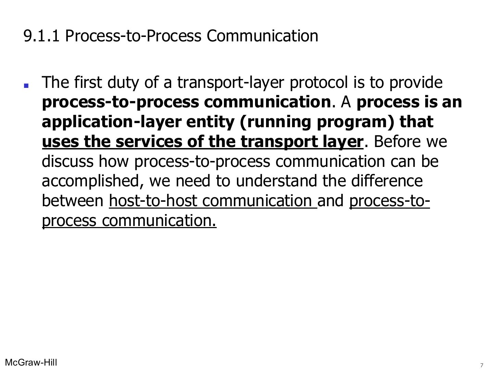
The first duty is process-to-process communication. A process is an application-layer entity, a running program, that uses the transport layer’s services: a browser, an email client, a web server. A computer runs many processes at once, so “deliver to this computer” isn’t enough; the data must reach the right program.
In transport-layer terms, a process is:
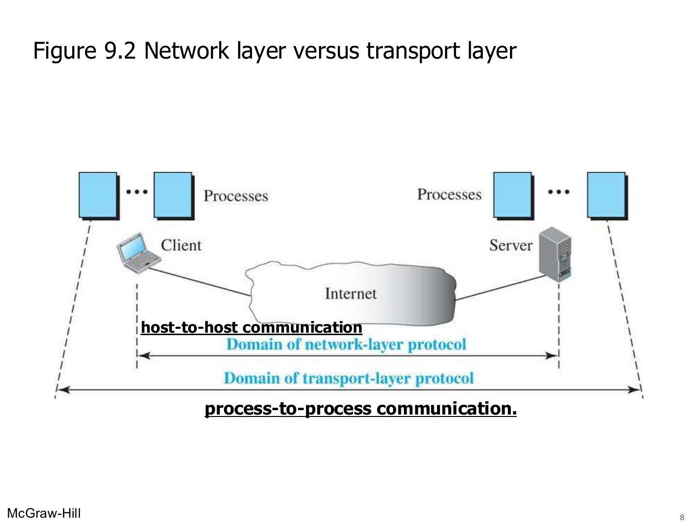
The difference in one picture: the network layer provides host-to-host delivery (it gets the packet to the right computer, using IP addresses); the transport layer provides process-to-process delivery (it gets the data to the right program on that computer, using port numbers).
Host-to-host delivery is the job of the _ layer; process-to-process delivery is the job of the _ layer.
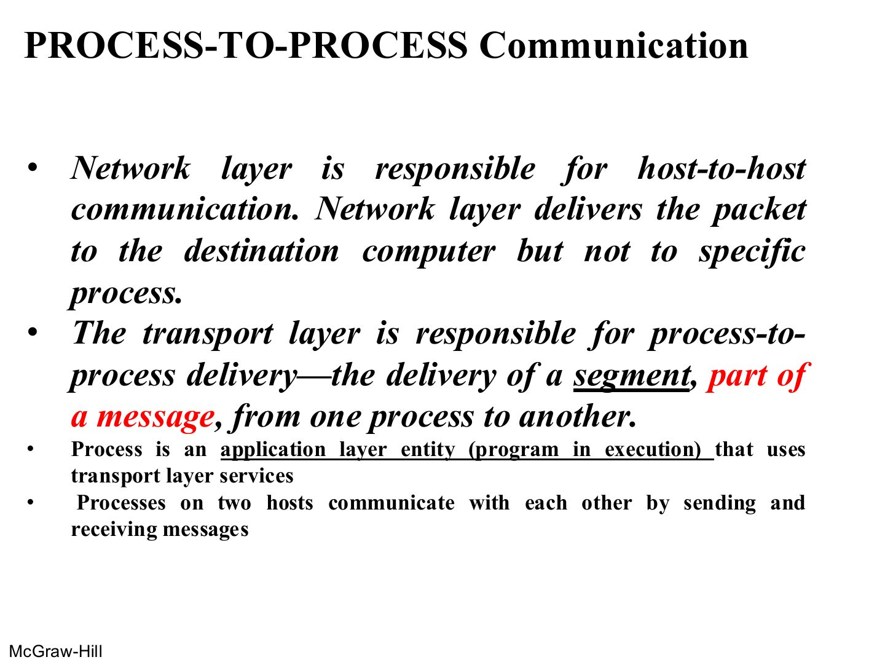
The network layer delivers the packet to the destination computer, but not to a specific process. The transport layer takes over from there and delivers each segment (a piece of a message) to the right process. Processes on the two hosts communicate by sending and receiving messages through the transport layer.
What does the network layer NOT do that the transport layer does?
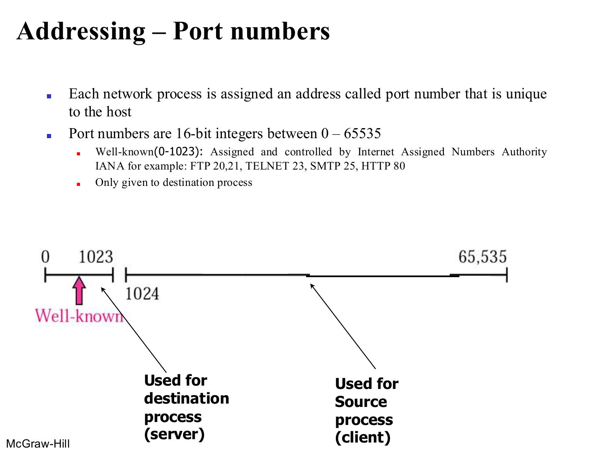
Each process using the network gets an address called a port number, unique on its host. Port numbers are 16-bit integers, from 0 to 65,535. The well-known ports, 0 to 1023, are assigned and controlled by IANA for standard services: FTP 20 and 21, Telnet 23, SMTP 25, HTTP 80 (and DNS 53, DHCP 67). They are given to server (destination) processes, so clients always know where to find a service. The client (source) process uses a port above 1023, usually picked at random by its operating system for that connection (an ephemeral port). So a request from a browser might go from port 52000 to port 80.
Memory trick Ports to know: FTP 20/21, Telnet 23, SMTP 25, DNS 53, DHCP 67, HTTP 80.
Port numbers are:
The well-known port of HTTP is:
A client normally uses a well-known port as its source port.
Who assigns the well-known ports 0–1023?
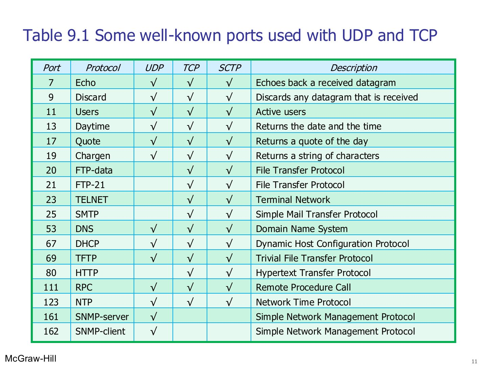
The table shows which transport protocol each service uses. FTP (20, 21), Telnet (23), SMTP (25) and HTTP (80) use TCP only, because they need every byte to arrive correctly and in order. SNMP (161 server, 162 client) uses UDP only. DNS (53), DHCP (67), RPC (111) and NTP (123) appear with UDP and also with TCP; DNS normally uses UDP for its short queries. A few small test services (echo 7, discard 9, daytime 13…) work over both.
Which application uses port 25?
Which port does DNS use?
Which service uses UDP only according to the table?
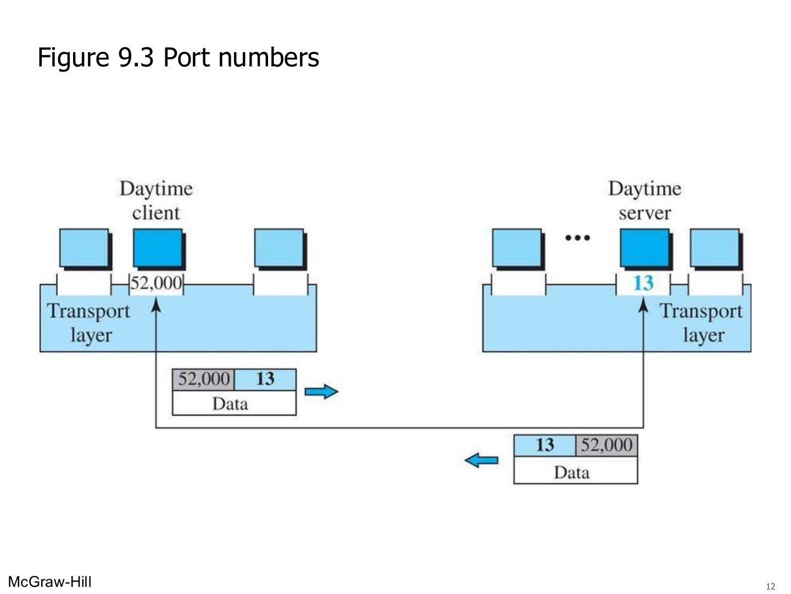
The daytime example: the client uses a temporary port, 52,000, and sends its request to the server’s well-known port 13. In the request, source port = 52,000 and destination port = 13; in the reply, they swap: source port = 13, destination port = 52,000.
In the daytime reply from server to client, the destination port is:
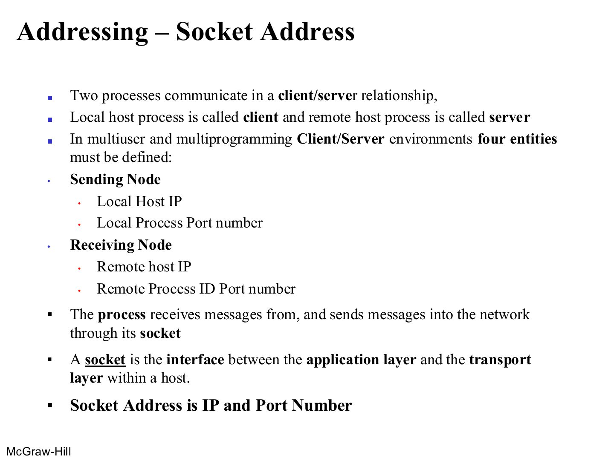
Two processes communicate in a client/server relationship: the local process is the client and the remote process is the server. To identify one communication in a multi-user, multi-program environment, four things must be defined:
for the sending node, its IP address and its process’s port number; for the receiving node, its IP address and its process’s port number. A process sends and receives messages through its socket: the interface between the application layer and the transport layer inside a host. When a program wants to use the network, it opens a socket. A socket address is the combination of an IP address and a port number: the IP address says which host, and the port says which process on it. A connection is identified by two socket addresses: the client’s and the server’s.
Memory trick Socket address = WHERE (IP) + WHO (port).
A socket address is the combination of:
A socket is the interface between which layers?
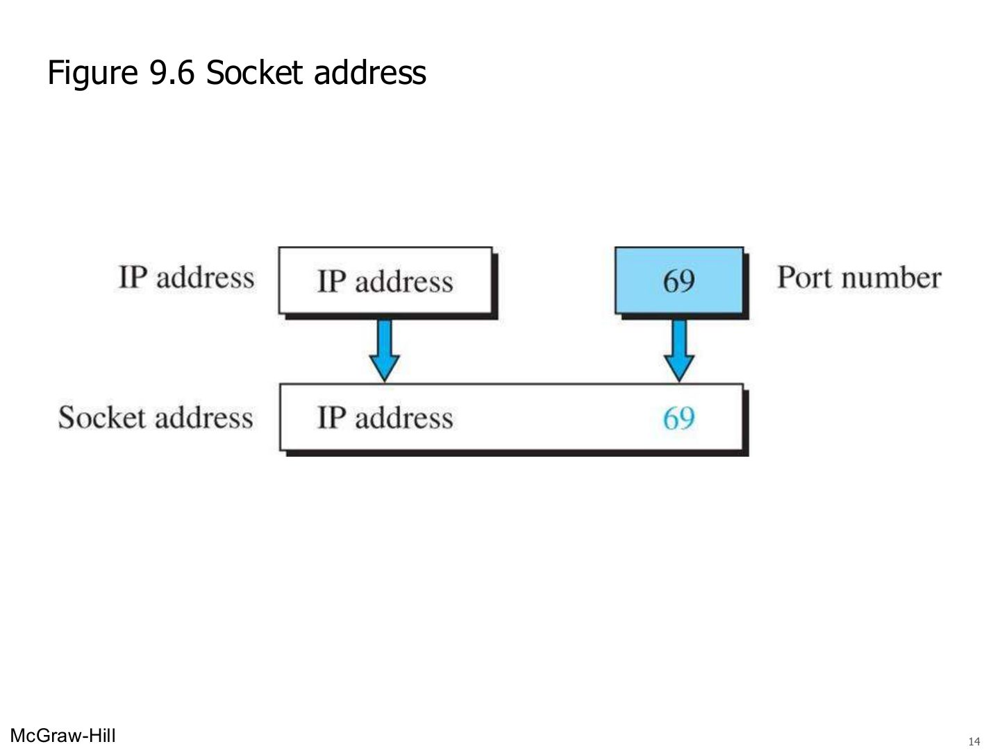
The figure builds a socket address: an IP address plus a port number (69 in the example, the TFTP port) together form one socket address.
An IP address plus port number 69 forms:
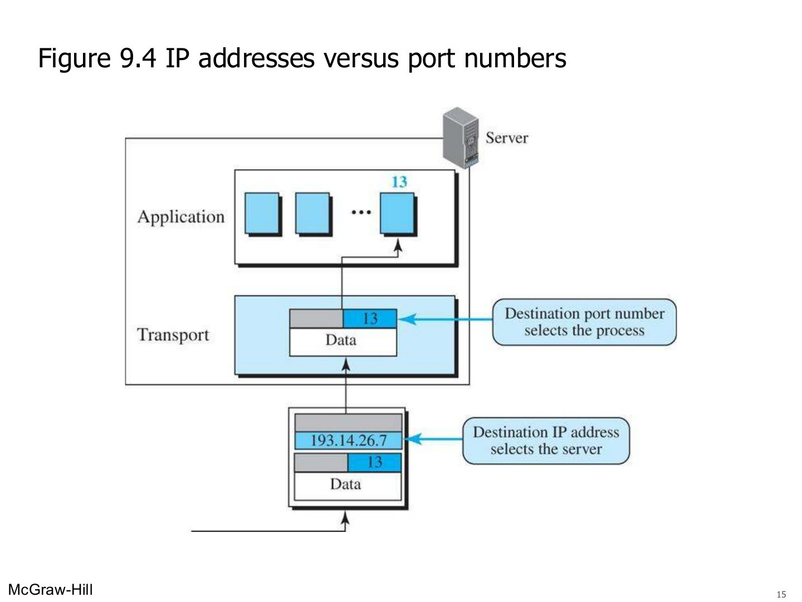
At the destination, the two parts are used in two steps: the destination IP address selects the right host (server) among all hosts on the Internet, and the destination port number selects the right process among all the processes running on that host.
At the receiving host, which field selects the application process?
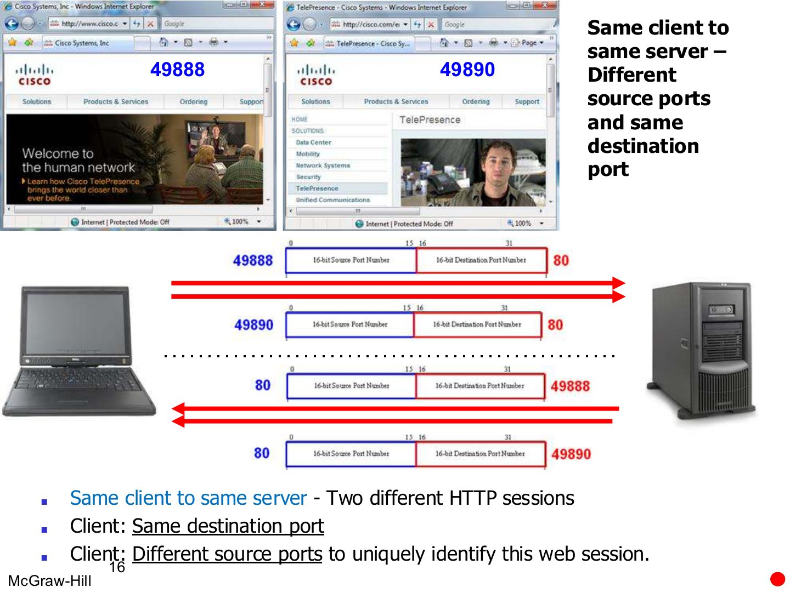
Two browser windows open the same site (cisco.com). Both connections go to the same destination port 80, but the client gives each one a different source port (49888 and 49890). That is how the server, and the client’s own transport layer, keep the two web sessions apart.
Two browser tabs open the same website. How are the two sessions kept apart?
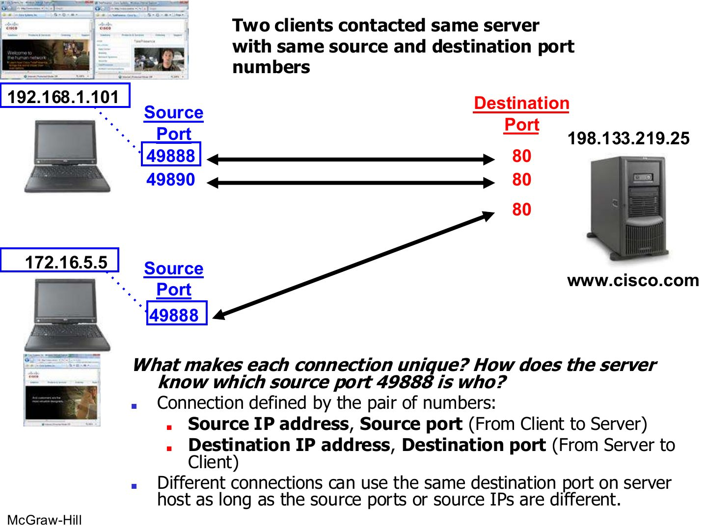
Two different clients, 192.168.1.101 and 172.16.5.5, happen to use the same source port, 49888, to reach the same server 198.133.219.25 on port 80. That is fine, because a connection is identified by the whole pair of socket addresses: source IP + source port, and destination IP + destination port. So many connections can share the same destination port on a server, as long as their source ports or source IPs differ. Here the source IPs differ, so the server sees two separate connections.
Two laptops, 192.168.1.101 and 172.16.5.5, both open a connection from port 49888 to a web server on port 80. How does the server tell them apart?
Each connection is identified by the full pair of socket addresses (source IP, source port, destination IP, destination port). The source IPs differ, so the two connections are different even though the ports are the same.
Many connections can use the same destination port on a server.
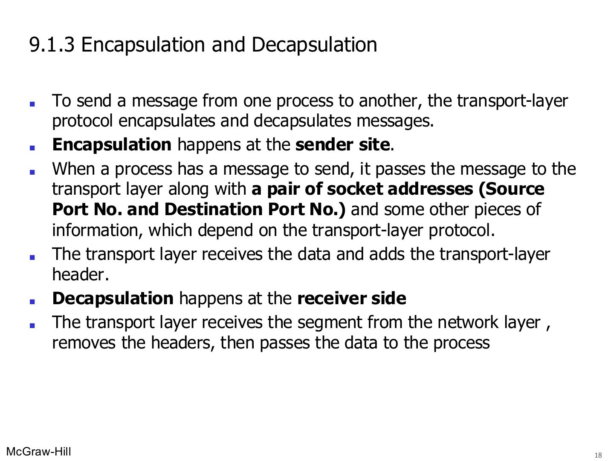
Encapsulation happens at the sender. A process with a message to send hands it to the transport layer together with the socket addresses (the source and destination port numbers) and other information depending on the protocol. The transport layer adds its header (with the ports) to the data, making a segment, and passes it to the network layer. Decapsulation happens at the receiver: the transport layer receives the segment from the network layer, removes the header, and passes the data to the process identified by the destination port.
Where does encapsulation by the transport layer happen?
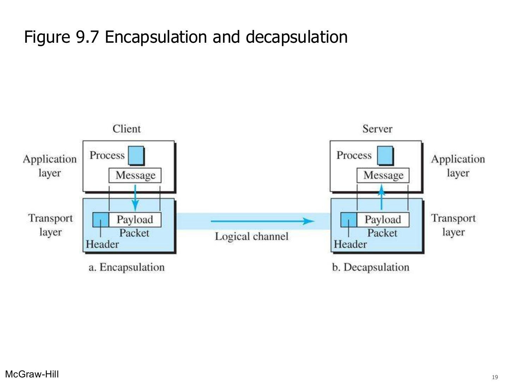
The figure: at the client, the message gets a transport header and goes down as a packet; at the server, the header is removed and the message is delivered to the server process.
What does the server’s transport layer do in the figure?
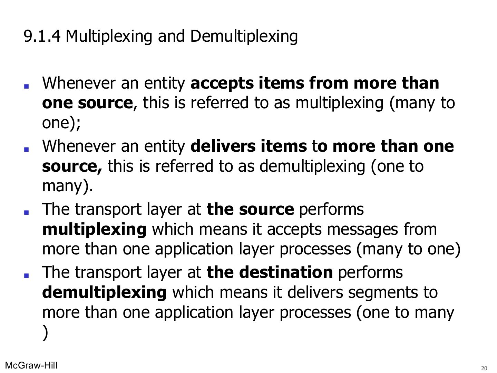
Multiplexing means accepting items from more than one source and sending them through one channel (many to one).
Demultiplexing means taking items from one channel and delivering them to more than one destination (one to many). At the source, the transport layer multiplexes: it accepts messages from several processes and sends them all through the single network layer. At the destination, it demultiplexes: it delivers each incoming segment to the right process, using the destination port number.
Demultiplexing at the transport layer happens at the:
Multiplexing at the source transport layer means:
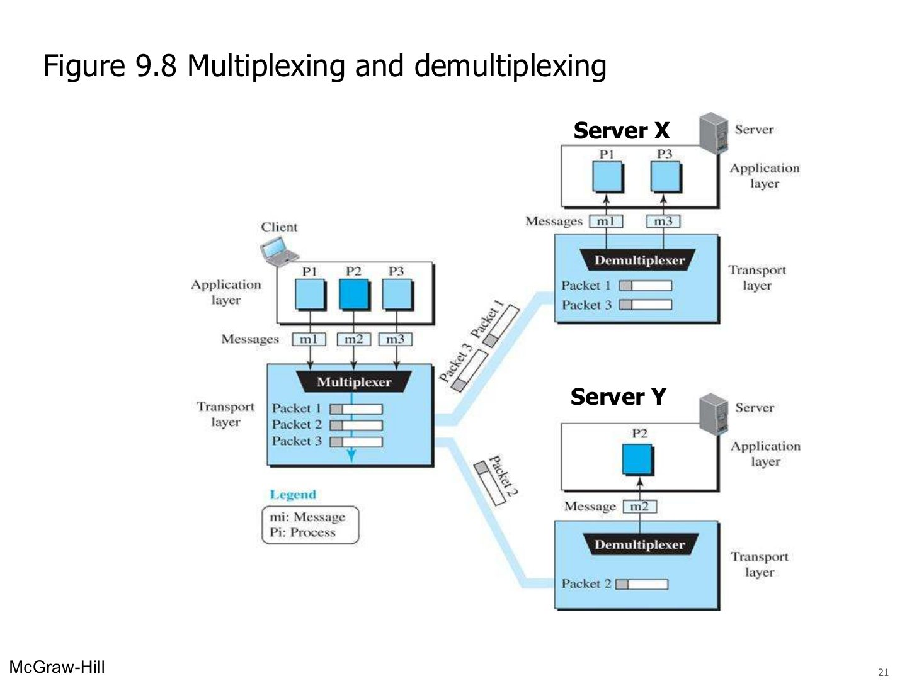
In the figure, the client has three processes, P1 to P3. Its transport layer multiplexes their messages into the network. At the other end, server X and server Y each demultiplex the segments they receive, using port numbers to give each one to the right process.
In the figure, which side demultiplexes?
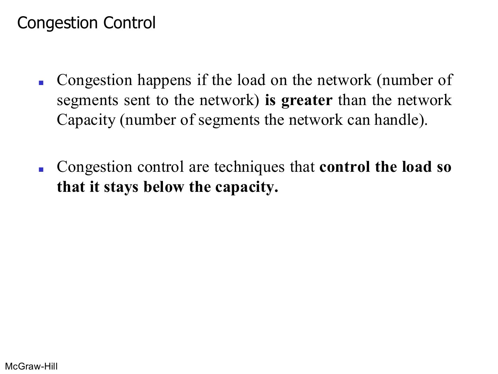
Congestion happens when the load on the network (the number of segments sent into it) is greater than its capacity (the number it can handle). Routers’ queues fill up, packets are delayed and then dropped. Congestion control is the set of techniques that keep the load below the capacity, for example by slowing down the senders when signs of congestion appear. Compare with flow control: flow control protects the receiver from a fast sender; congestion control protects the network.
Trap Flow control protects the RECEIVER; congestion control protects the NETWORK.
Seen again Ch 3 Part 1, slide 5: Flow control at the data link layer
Keeping the load on the network below its capacity is:
Congestion happens when:
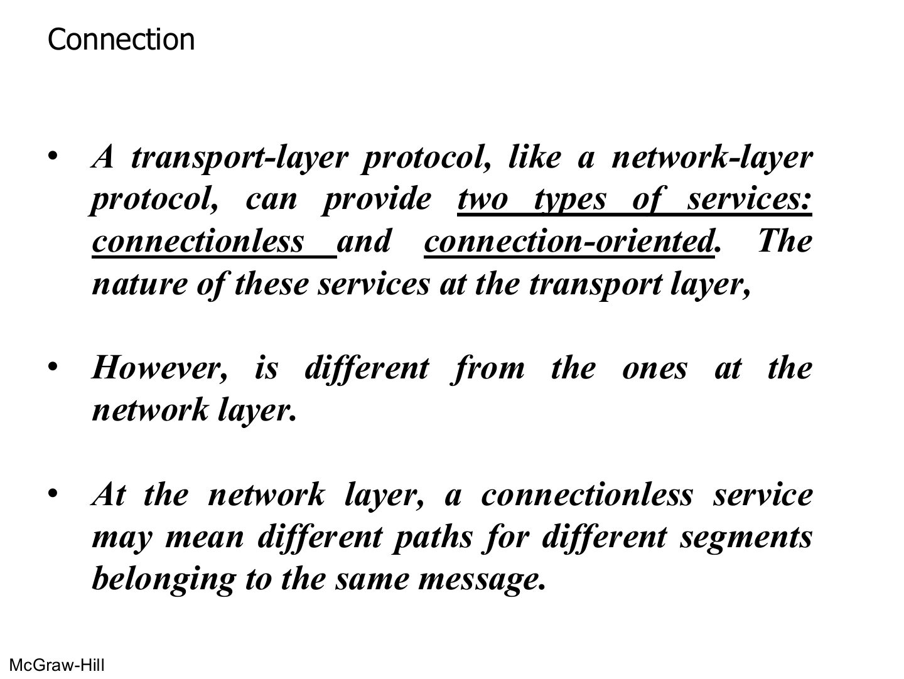
Like the network layer, the transport layer can offer connectionless or connection-oriented service, but the words mean something different here. At the network layer, connectionless means packets of the same message may take different paths. At the transport layer, it is about whether the segments are related to each other and handled as one ordered stream.
At the network layer, connectionless means:
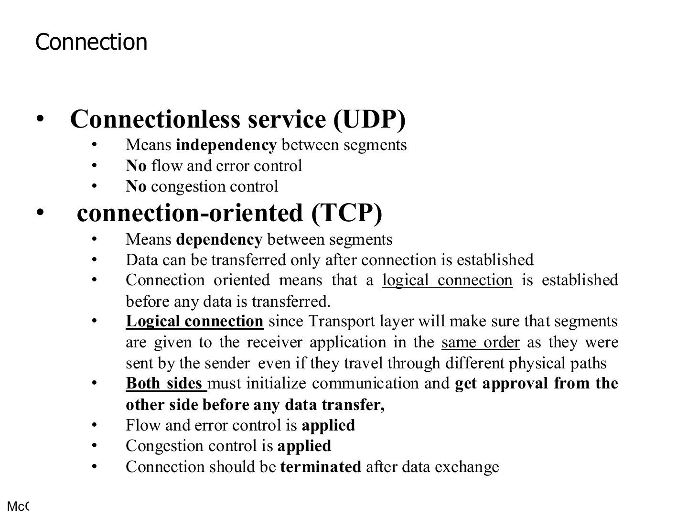
Connection-oriented service (TCP): the segments depend on each other. A logical connection is set up before any data moves: both sides must initialise the communication and get the other’s approval. It is called logical because the transport layer delivers the segments to the application in the order they were sent, even if they travelled by different physical paths. With TCP, flow control, error control and congestion control are all applied, and the connection must be terminated after the data exchange.
Compare connectionless (UDP) and connection-oriented (TCP) transport services.
Connectionless (UDP): each segment is independent, no connection setup, no flow, error or congestion control. Connection-oriented (TCP): a logical connection is set up with both sides agreeing before data is sent, segments are delivered in order, flow, error and congestion control are applied, and the connection is closed afterwards.
UDP provides flow and congestion control.
Why is TCP’s connection called “logical”?
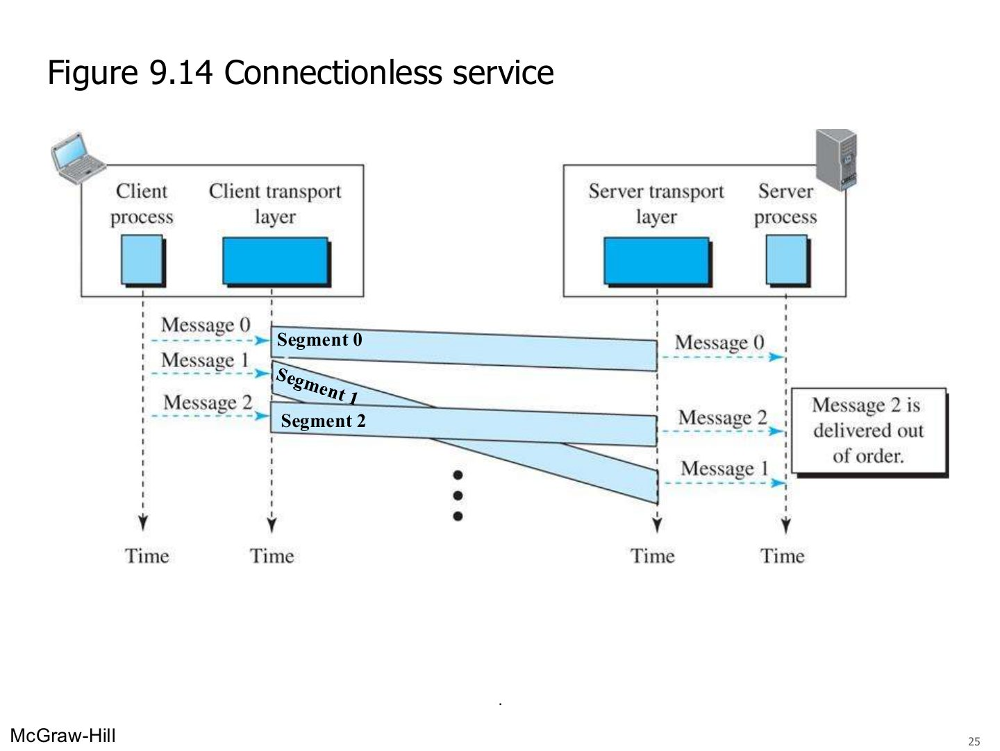
In connectionless service, the sender’s transport layer sends messages 0, 1 and 2 as independent segments. Message 2 happens to arrive before message 1, and it is delivered to the application out of order: nobody fixes it, because the segments aren’t treated as one stream.
In connectionless service, a message that arrives out of order is:
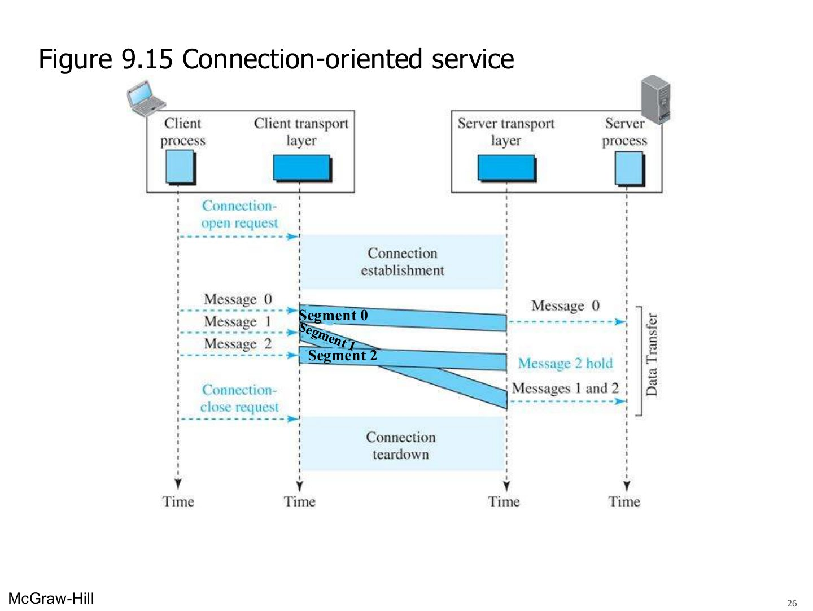
In connection-oriented service: first a connection open request and establishment; then data transfer, where a segment that arrives early (message 2) is held until the missing one (message 1) arrives, and they are delivered in order; finally teardown. This is how TCP behaves.
In connection-oriented service, what happens to message 2 if it arrives before message 1?
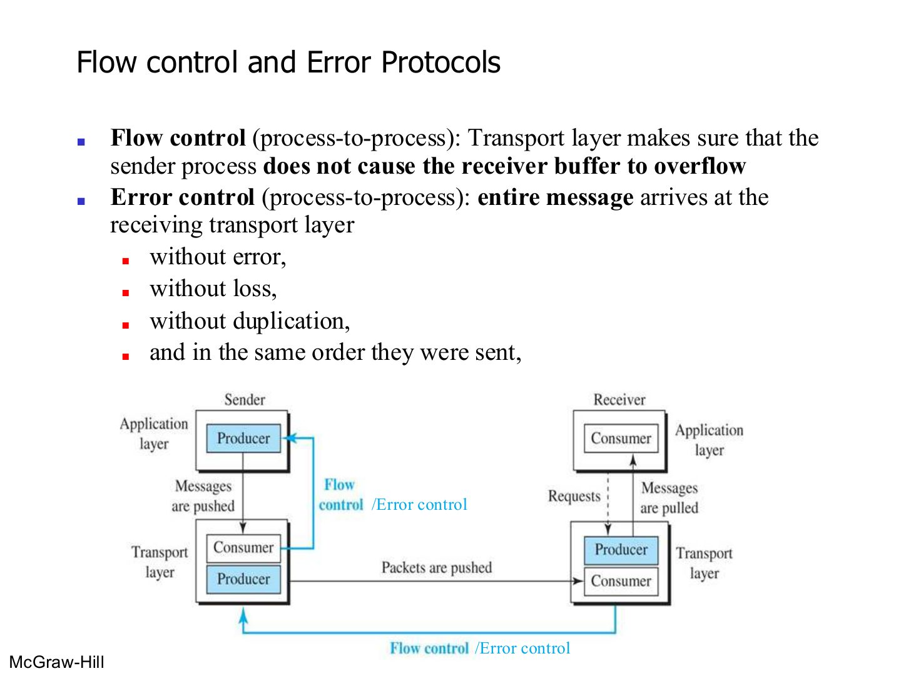
Flow control (between processes): the transport layer makes sure the sending process doesn’t overflow the receiver’s buffer. If the receiver can only take so much at a time, the sender must slow down.
Error control (between processes): the entire message must arrive at the receiving transport layer without error, without loss, without duplication, and in the same order it was sent. The figure shows the producer/consumer idea: the sender pushes data and the receiver pulls it at its own pace, with buffers between them.
Error control at the transport layer ensures the message arrives:
Transport-layer flow control prevents:
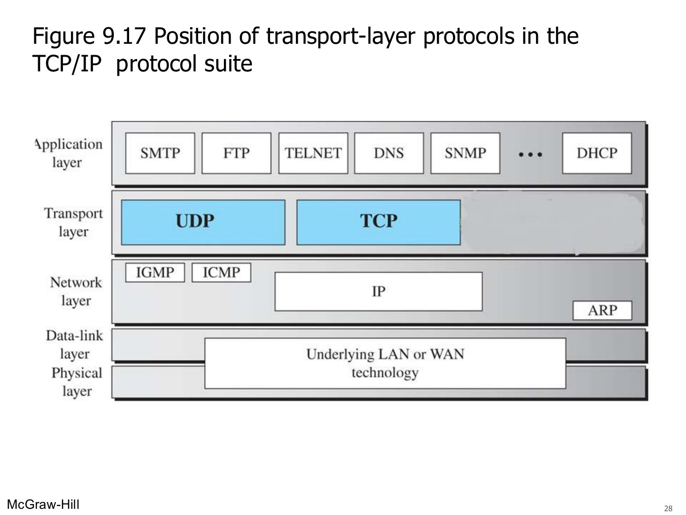
The same figure as slide 5: UDP and TCP sit between the application protocols and IP. The rest of the deck takes TCP first, then UDP.
Which application protocol sits on top of UDP in the figure?
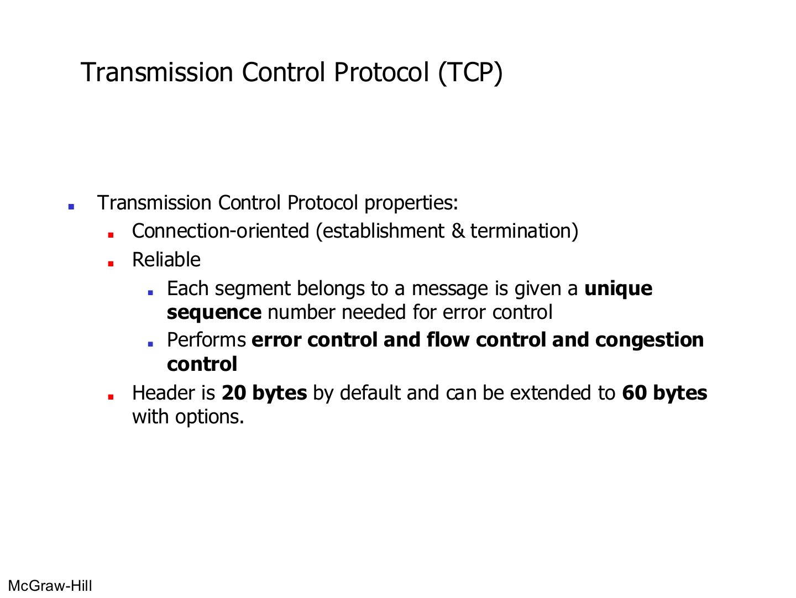
TCP properties: it is connection-oriented (connection establishment and termination); and it is reliable: each segment of a message is given a unique sequence number, which is what makes error control possible (the receiver can spot a missing or duplicate segment and put segments back in order). It performs error control, flow control and congestion control. Its header is 20 bytes by default and can grow to 60 bytes with options (compared with UDP’s fixed 8 bytes).
The default TCP header size is:
What makes TCP error control possible?
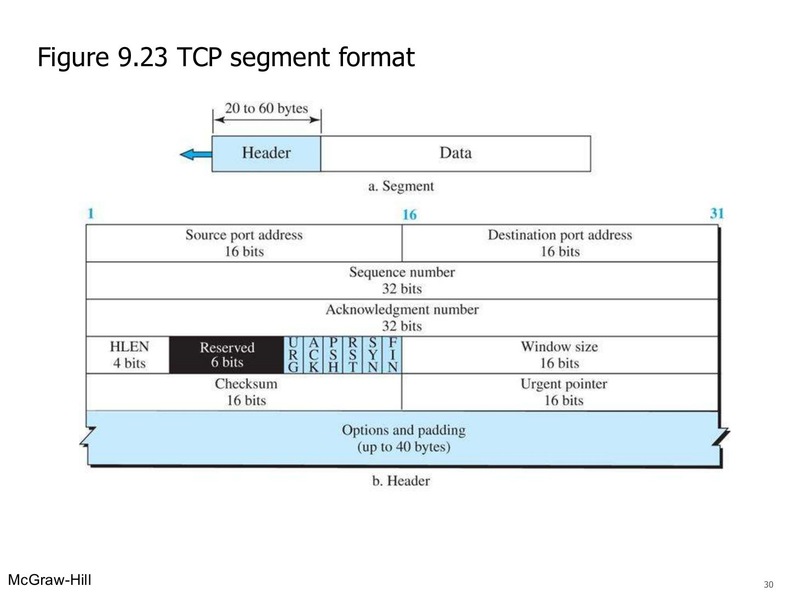
The TCP header fields: source port and destination port (16 bits each); sequence number (32 bits, the number of the first data byte in this segment); acknowledgment number (32 bits, the next byte expected from the other side); HLEN (header length); the control flags; window size (16 bits, the receive window); checksum; urgent pointer; and options.
How long are the TCP sequence and acknowledgment number fields?
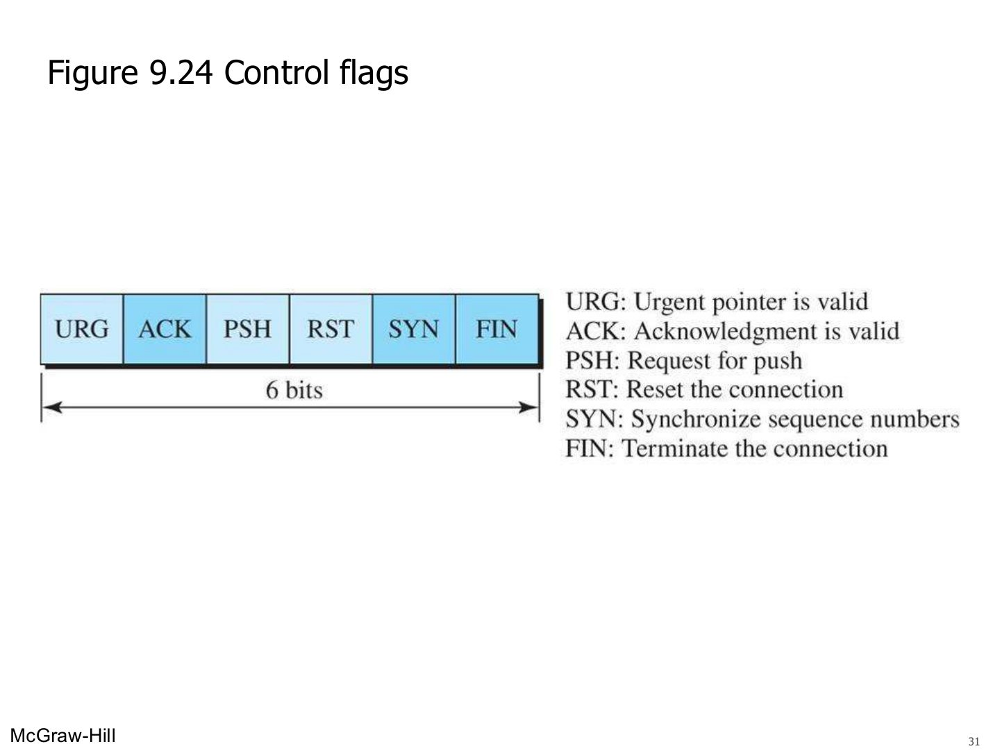
The six control flags: SYN (synchronise: used to open a connection), ACK (the acknowledgment number field is valid), FIN (finish: used to close a connection), RST (reset: abort the connection), PSH (push the data to the application immediately) and URG (the urgent pointer is valid). For exams, SYN, ACK and FIN matter most.
Which TCP flag is used to open a connection?
Which flag terminates a connection?
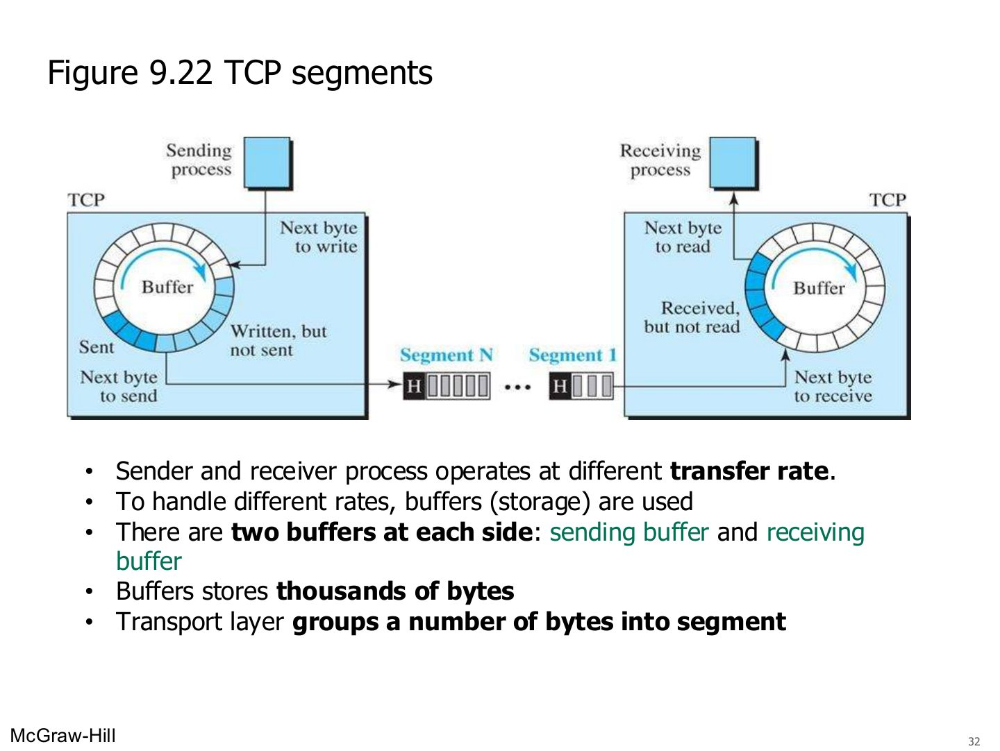
The sending and receiving processes rarely run at the same speed, so TCP uses buffers (storage) to absorb the difference. There are two buffers on each side: a sending buffer and a receiving buffer, each holding thousands of bytes. The application writes a stream of bytes into the sending buffer, and the transport layer groups a number of bytes into a segment and sends it. At the receiver, bytes go into the receiving buffer until the application reads them.
Why does TCP use buffers on both sides?
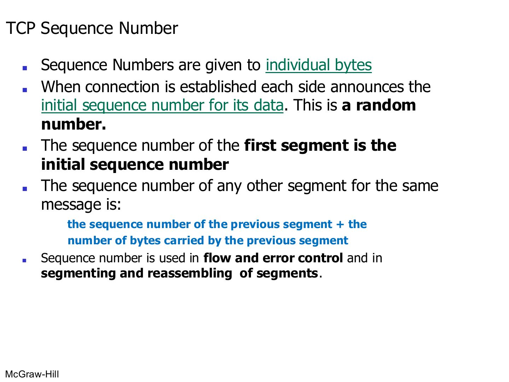
When the connection is set up, each side announces its initial sequence number (ISN), which is a random number (so old segments from a previous connection can’t be confused with new ones). The first segment’s sequence number is the ISN. Every later segment’s sequence number = the previous segment’s sequence number + the number of bytes the previous segment carried. A segment with sequence number 2,001 carrying 500 bytes covers bytes 2,001–2,500, so the next one starts at 2,501. Sequence numbers are used for flow control, error control (finding missing or duplicate data) and segmenting and reassembling the message.
Trap Sequence numbers count bytes, not segments.
A segment has sequence number 2,001 and carries 500 bytes. The next segment’s sequence number is:
TCP sequence numbers count segments.
The initial sequence number of a TCP connection is:
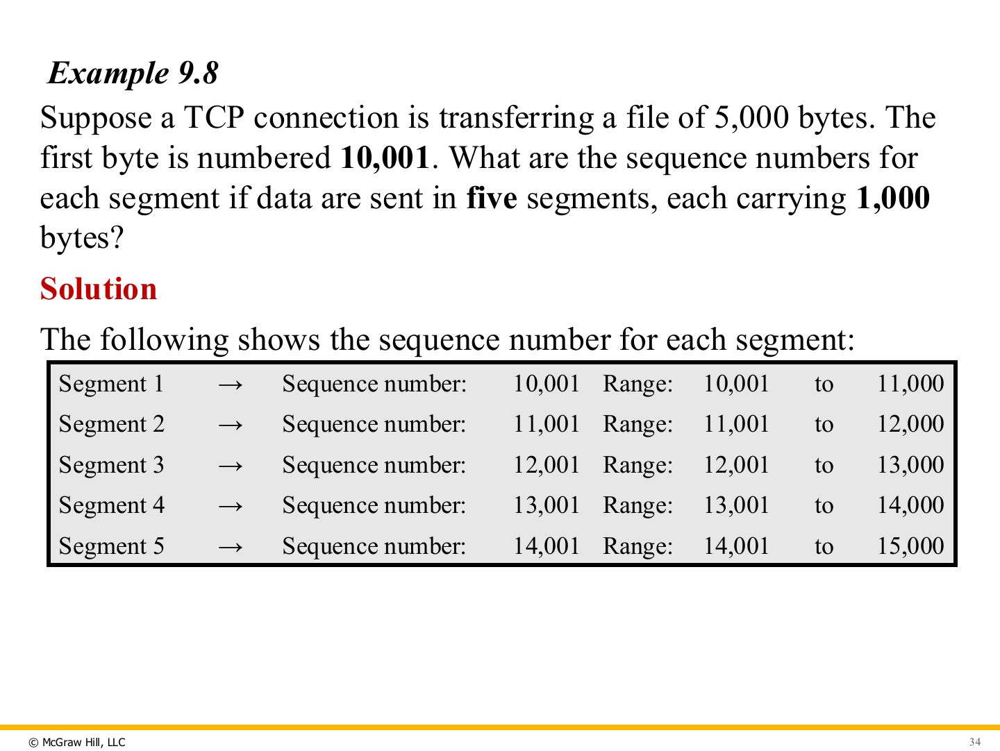
Example 9.8: a 5,000-byte file, first byte numbered 10,001, sent as five 1,000-byte segments. Segment 1 has sequence number 10,001 (bytes 10,001–11,000), segment 2 11,001, segment 3 12,001, segment 4 13,001, segment 5 14,001 (bytes 14,001–15,000). Each time, add the number of bytes in the previous segment.
A 6,000-byte file starts at byte 1,001 and is sent in 3 equal segments. The third segment’s sequence number is:
In Example 9.8, segment 4 carries bytes:
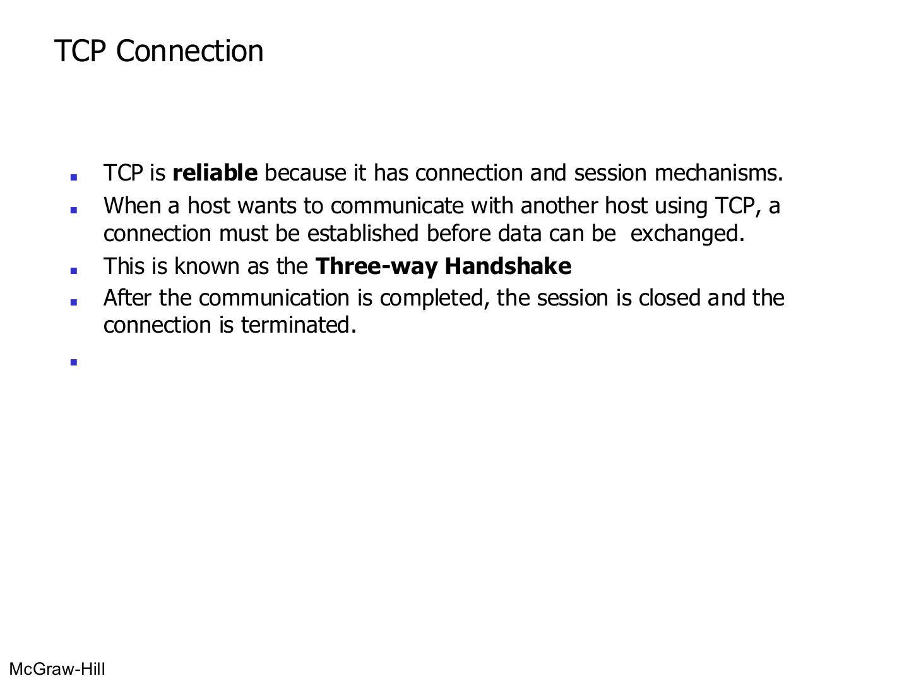
TCP is reliable partly because it uses connections and sessions. Before two hosts exchange data with TCP, a connection must be set up: this is the three-way handshake. When the communication is finished, the session is closed and the connection is terminated (slide 40).
What must happen before two hosts exchange data with TCP?
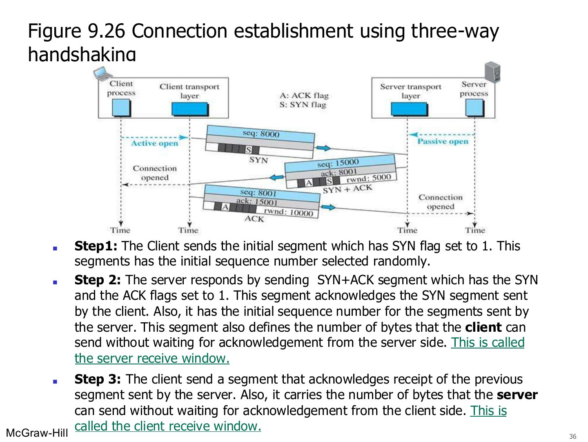
Step 1: the client sends a segment with the SYN flag set, carrying its randomly chosen initial sequence number (8000 in the figure).
Step 2: the server replies with SYN + ACK (both flags set). The ACK acknowledges the client’s SYN (ack = 8001, because a SYN uses up one sequence number). The segment also carries the server’s own initial sequence number (15000) and its receive window (rwnd = 5000): how many bytes the client may send before waiting for an acknowledgment. This is the server receive window.
Step 3: the client sends an ACK that acknowledges the server’s segment (ack = 15001) and carries the client receive window (rwnd = 10000): how many bytes the server may send before waiting. Now both sides know each other’s starting numbers and window sizes, and data can flow. Order to remember: SYN → SYN-ACK → ACK.
Memory trick SYN → SYN-ACK → ACK.
The second segment of the three-way handshake has which flags set?
The client sends SYN with seq 8000. The server’s SYN+ACK carries ack =
In the handshake, the server’s rwnd of 5000 tells the client:
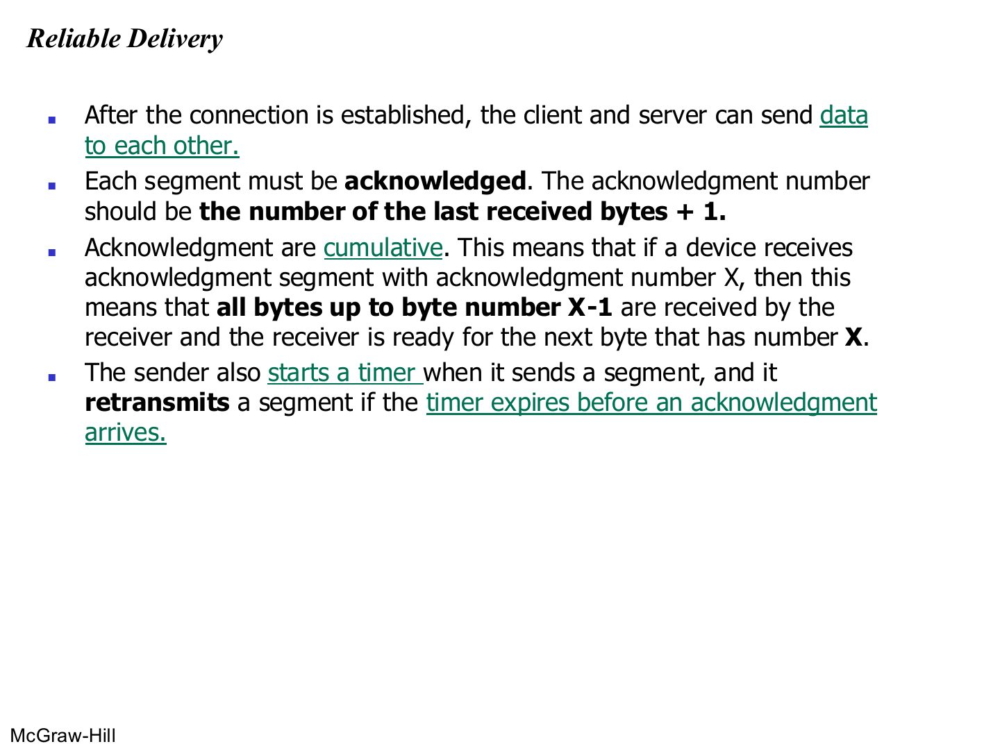
Once the connection is established, both sides can send data to each other.
Every segment must be acknowledged. The acknowledgment number is the number of the last byte received + 1, which is the next byte the receiver expects. Acknowledgments are cumulative: an ACK number of X means all bytes up to X - 1 have been received, and the receiver is ready for byte X. One ACK can therefore confirm several segments at once. The sender also starts a timer for each segment it sends. If the timer expires before an acknowledgment arrives, the sender retransmits the segment. This is how TCP recovers from lost segments.
A receiver got bytes up to 4,500. It sends ACK number:
An ACK number of X means bytes up to X - 1 were received.
What does a TCP sender do if no acknowledgment arrives before its timer expires?
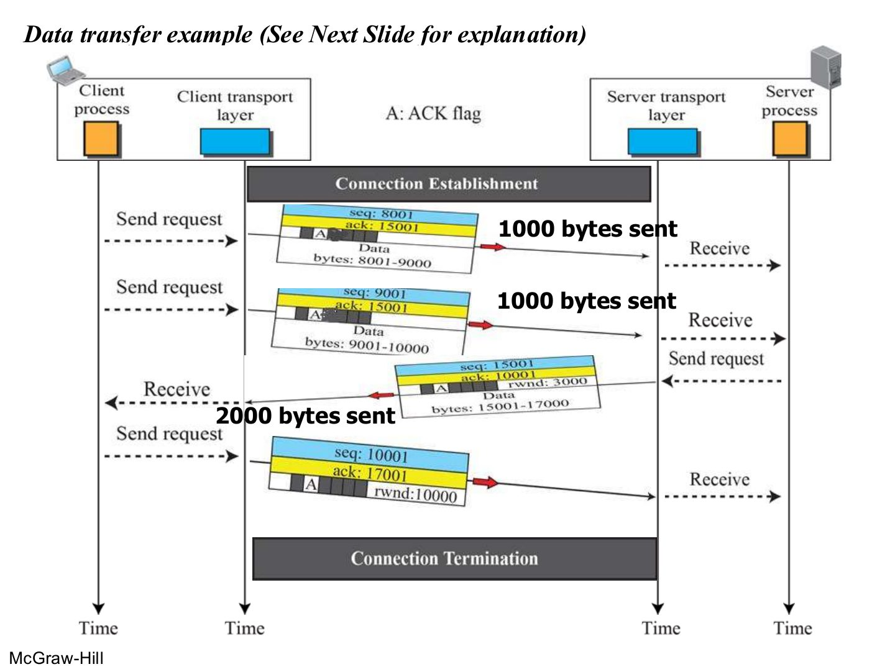
The figure is explained on the next slide. Notice that acknowledgments can travel inside data segments going the other way (called piggybacking): the server’s data segment also carries its ACK.
What does “piggybacking” mean in the data transfer figure?
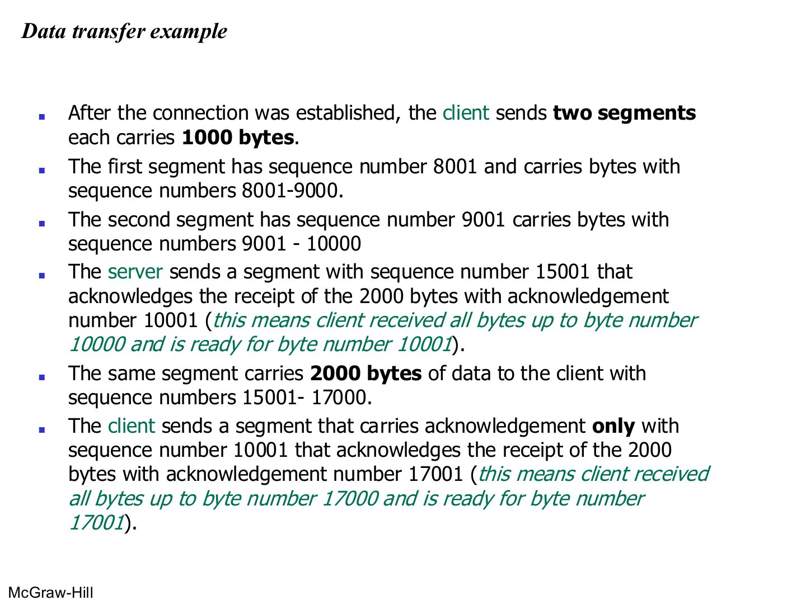
After the handshake, the client sends two segments of 1000 bytes each. The first has sequence number 8001 and carries bytes 8001–9000. The second has sequence number 9001 and carries bytes 9001–10000. The server replies with a segment whose sequence number is 15001. It acknowledges the 2000 bytes with ack = 10001 (all bytes up to 10000 received, next expected 10001), and it also carries 2000 bytes of its own data, bytes 15001–17000. Finally the client sends an ACK-only segment (sequence number 10001, since it carries no data) with ack = 17001: all of the server’s bytes up to 17000 received.
Client sends seq 8001 (1000 bytes) and seq 9001 (1000 bytes). The server replies with 2000 bytes starting at 15001. Give the server’s ACK number and the client’s final ACK number.
The server acknowledges 10001 (it has bytes up to 10000). Its data covers 15001–17000, so the client acknowledges 17001.
The second client segment (seq 9001, 1000 bytes) carries bytes:
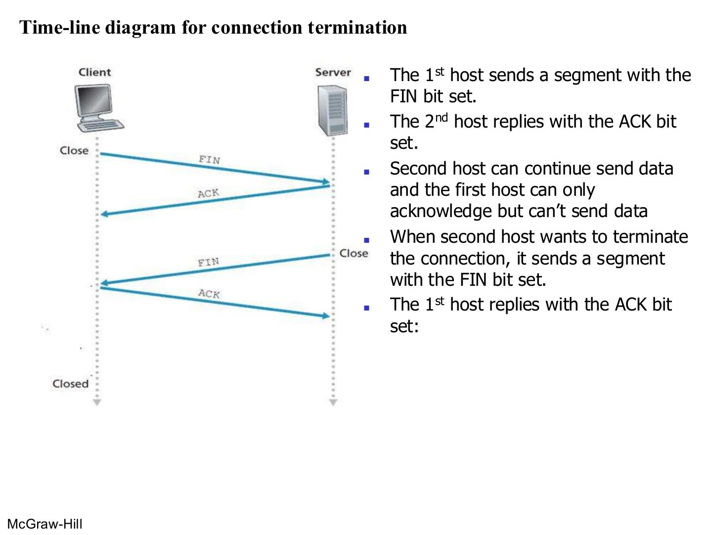
Closing a TCP connection takes four steps. (1) The first host (say the client) sends a segment with the FIN flag set: “I have finished sending.” (2) The second host replies with ACK. (3) The second host may keep sending data; the first host can only acknowledge it, not send new data (this in-between state is called a half-close). When the second host has finished, it sends its own FIN. (4) The first host replies with ACK, and the connection is closed.
After host 1 sends FIN and gets ACK, host 1 can:
How many segments does the termination in the figure use?
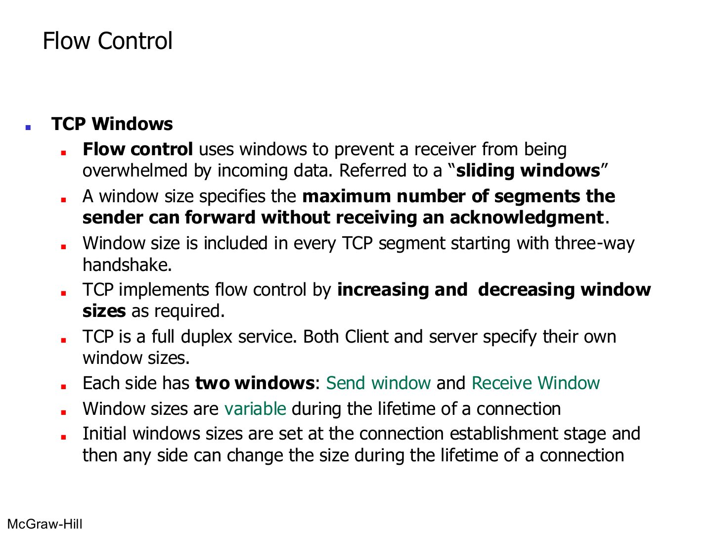
Flow control in TCP uses windows, called sliding windows, to stop a receiver from being overwhelmed. The window size is the maximum amount of data the sender may send without receiving an acknowledgment (the slide says segments; in TCP the window is actually counted in bytes, as the examples on the next slide show).
The window size is carried in every TCP segment, starting with the three-way handshake. TCP does flow control by increasing and decreasing the window as needed: a busy receiver advertises a smaller window, a free one a larger one. TCP is full duplex, so both the client and the server set their own window sizes. Each side has two windows: a send window and a receive window. Window sizes change during the connection: the initial sizes are set during the handshake, and either side can change its size later.
TCP flow control is done with:
How many windows does each side of a TCP connection have?
TCP window sizes stay fixed for the whole connection.
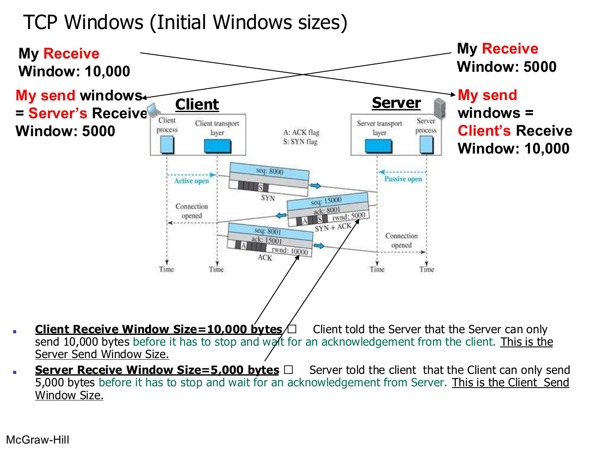
The client’s receive window is 10,000 bytes: the client tells the server it may send only 10,000 bytes before waiting for an ACK. So this is the server’s send window. The server’s receive window is 5,000 bytes: the server tells the client it may send only 5,000 bytes before waiting. So this is the client’s send window. The rule: my send window = the other side’s receive window; you can only send as much as the other side can take.
Memory trick You can only send as much as the other side can receive.
The server advertises a receive window of 5,000 bytes. The client’s send window is:
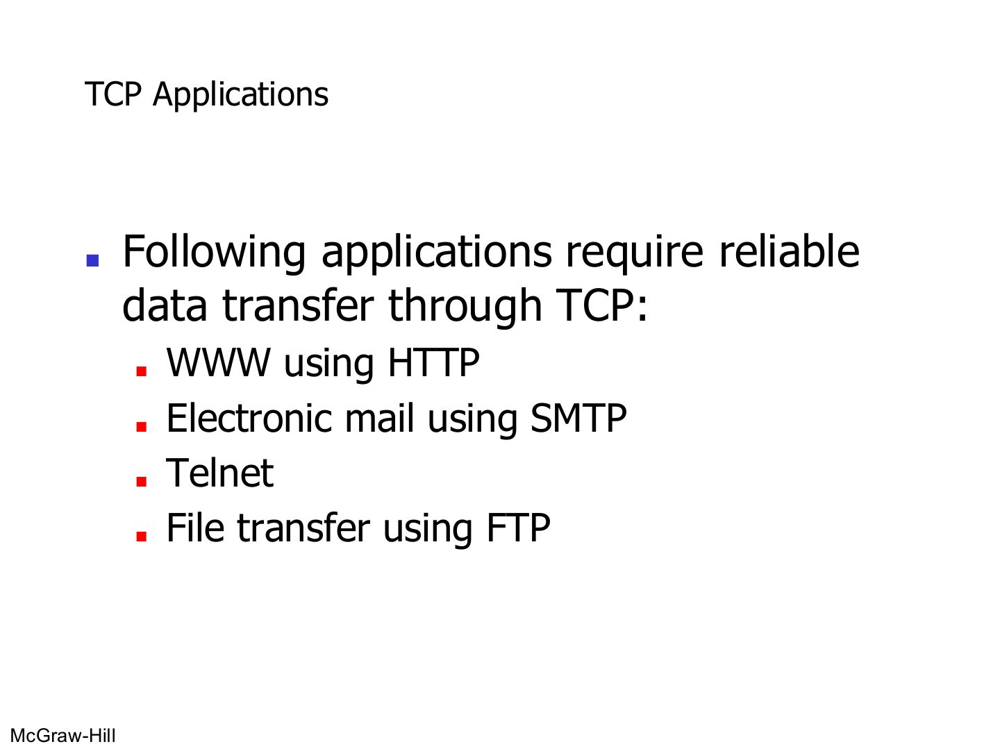
Applications that need reliable delivery use TCP: the web (HTTP), email (SMTP), Telnet (remote login) and file transfer (FTP). In all of them, a missing or corrupted byte would break the result (a broken web page, a garbled email, a corrupted file), so the extra overhead and delay of TCP are worth it.
Which application needs TCP?
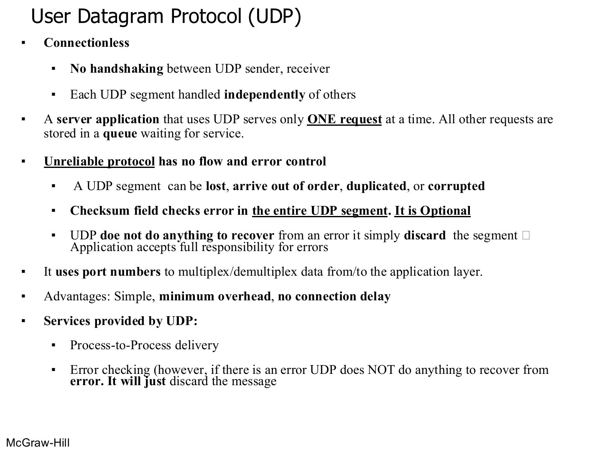
UDP is unreliable: it has no flow control and no error control, so a datagram can be lost, arrive out of order, be duplicated, or be corrupted. Its checksum covers the entire datagram but is optional. If the checksum shows an error, UDP doesn’t try to recover; it simply discards the datagram. The application takes full responsibility for dealing with errors. It does use port numbers to multiplex and demultiplex data to and from the application layer. Its advantages: it is simple, has minimum overhead (an 8-byte header), and has no connection delay (no handshake). Its services are just process-to-process delivery and (optional) error checking, which on error only discards the message.
When UDP detects an error with its checksum, it asks the sender to retransmit.
The UDP checksum is:
Which is an advantage of UDP?
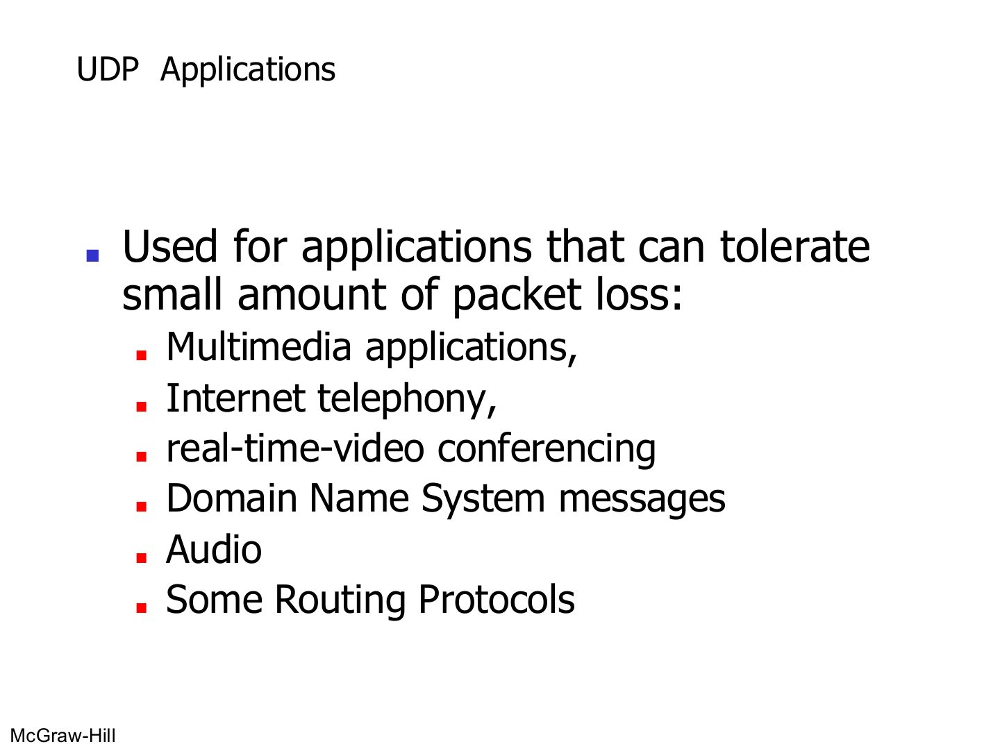
UDP suits applications that can tolerate a small amount of loss but need speed and low delay: multimedia, Internet telephony, real-time video conferencing, DNS messages, audio streaming, and some routing protocols.
Which application suits UDP?
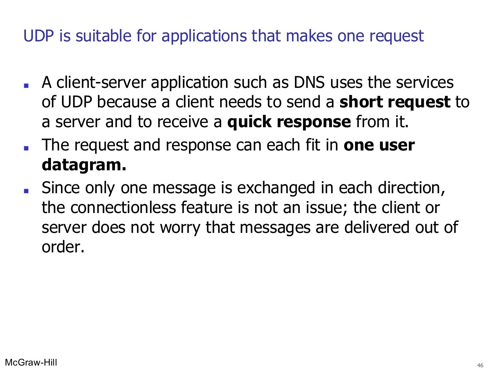
DNS uses UDP because a client sends a short request and needs a quick response. The request and the response each fit in one user datagram. With only one message in each direction, nothing can arrive out of order, so connectionless service is no problem, and skipping the handshake makes the lookup faster. If a reply is lost, the client simply asks again.
Why does DNS use UDP?
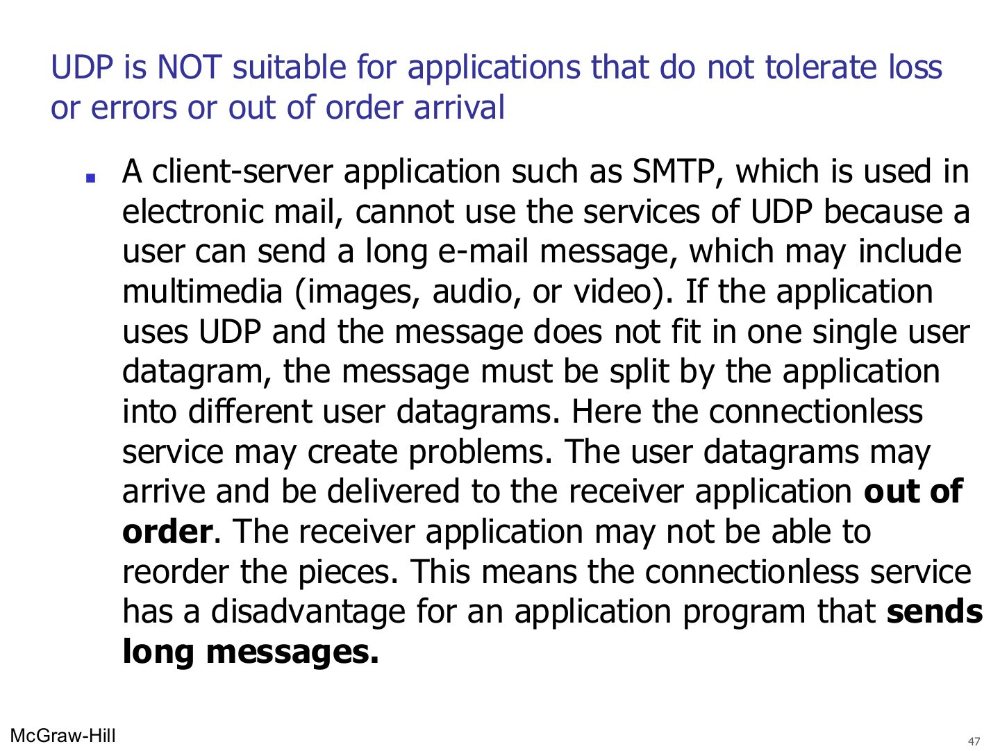
SMTP (email) can’t use UDP. An email may be long and include images, audio or video, so it wouldn’t fit in one datagram. The application would have to split it into many datagrams, and with connectionless service those can arrive out of order (or not at all), and the receiving application may be unable to reorder them. This is the disadvantage of connectionless service for long messages.
Why can’t SMTP use UDP?
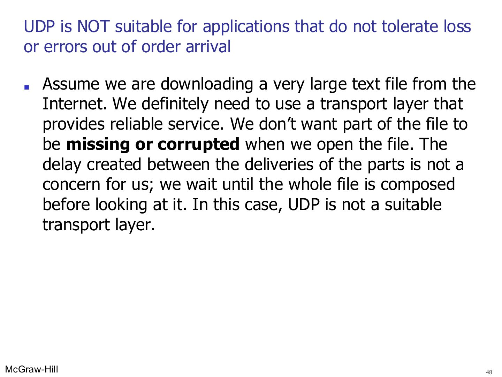
Downloading a very large text file needs a reliable transport: no part of the file may be missing or corrupted. The delay between parts doesn’t matter, because you only open the file once it is complete. So the right choice is TCP, not UDP.
You are downloading a very large text file. TCP or UDP? Why?
TCP. No part of the file may be missing or corrupted, and the delay between parts doesn’t matter because the file is opened only when complete. UDP gives no reliability or ordering.
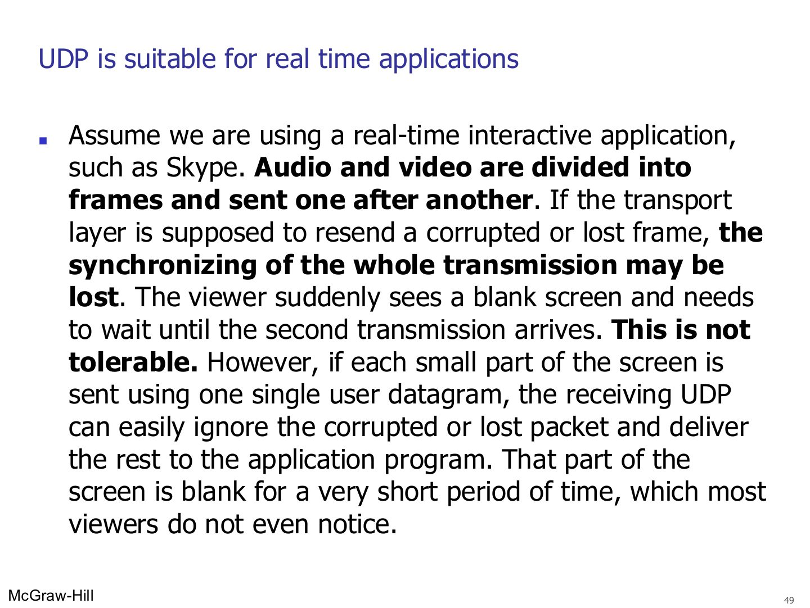
For a real-time interactive application such as Skype, audio and video are split into frames and sent one after another. If the transport layer stopped to resend a lost or corrupted frame, the timing of the whole stream would be lost: the viewer would see a frozen or blank screen while waiting. That isn’t acceptable. With UDP, a lost or corrupted datagram is just skipped and the rest is delivered on time; a tiny part of the picture is blank for a moment, which most viewers don’t notice. So real-time applications use UDP.
A video call app must choose between TCP and UDP. Which, and why?
UDP. Audio and video are sent as a stream of small frames; waiting for a retransmission would break the timing and freeze the call. With UDP a lost or corrupted frame is just skipped, and the brief gap is barely noticed.
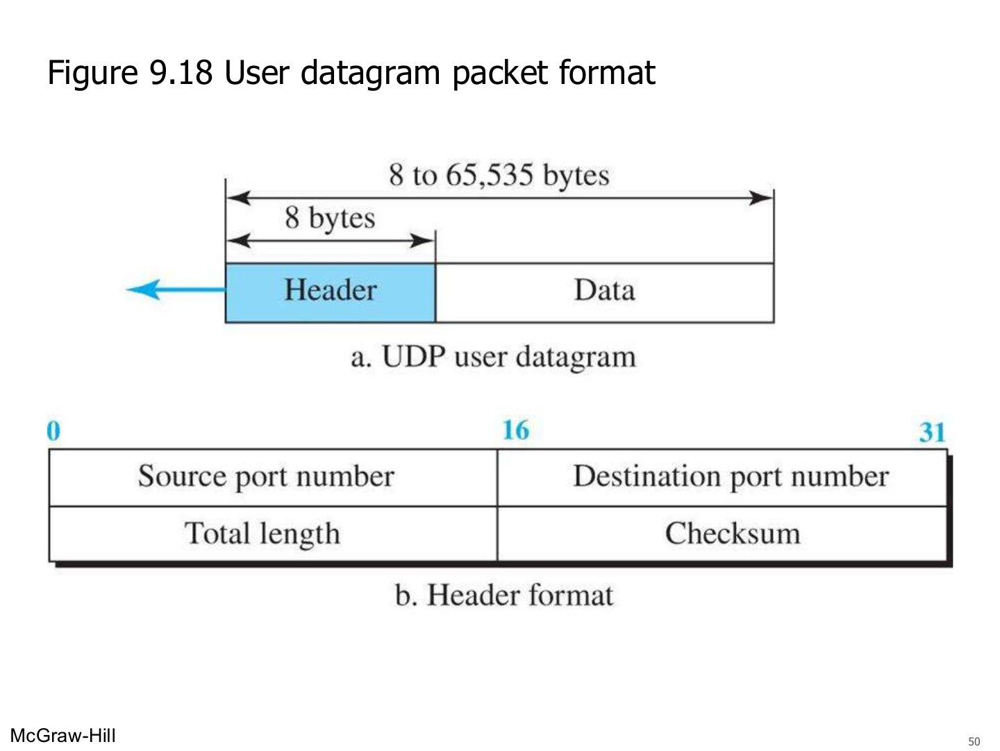
The UDP header is only 8 bytes: source port, destination port, total length and checksum (2 bytes each). A whole user datagram can be up to 65,535 bytes. Compare TCP’s 20-to-60-byte header: UDP’s small header is part of why it has so little overhead.
The UDP header length is:
Which field is NOT in the UDP header?